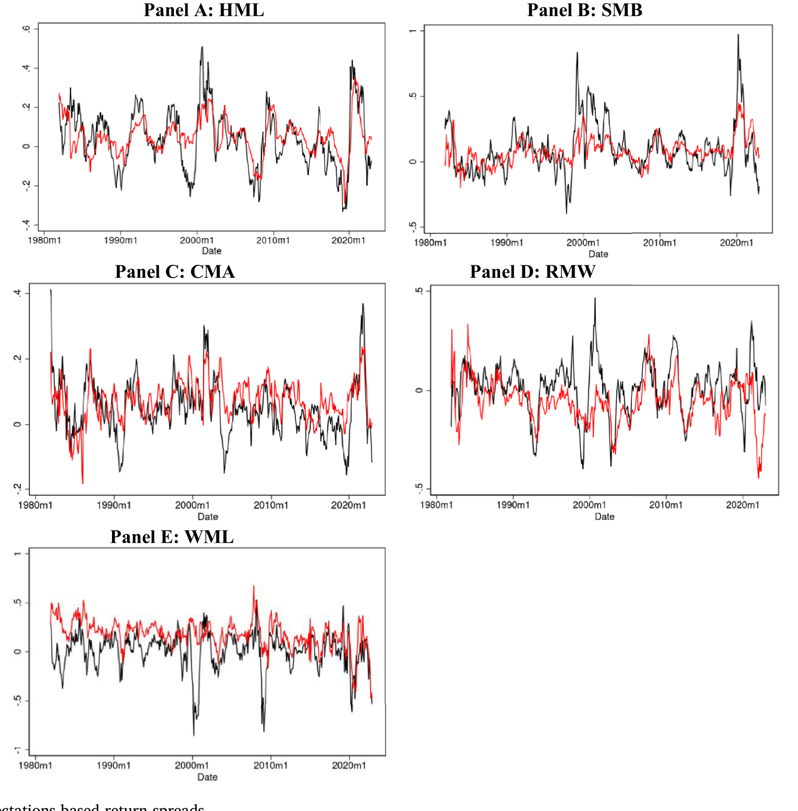
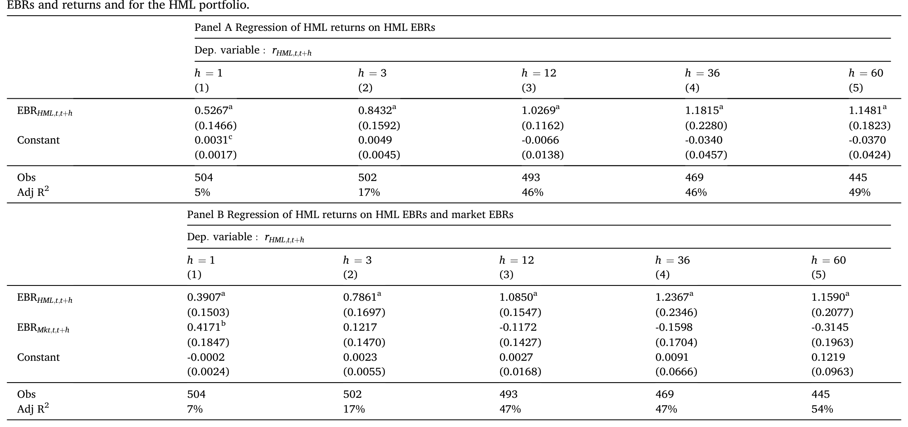
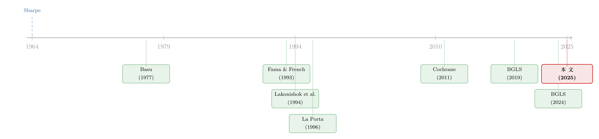

不需要那些「玄学风险」：当价值、动量、规模的超额收益，全被分析师的预期错误吃掉
本文读的是 Bordalo, Gennaioli, La Porta & Shleifer (2025, Journal of Financial Economics)：他们用分析师对企业盈利增长的预期，构造了一个「预期驱动收益 (Expectations Based Returns, EBR)」，把横截面里的风险差异彻底关掉。结果发现——价值、投资、规模、动量这些因子组合的多空价差，绝大部分不是对「神秘风险」的补偿，而是分析师预期被系统性地高估、随后被打脸所致。所谓的 exotic risk，根本不需要。
1 一个困扰了金融学半个世纪的「死结」
先从一个再朴素不过的等式说起。在有效市场假说 (efficient market hypothesis, EMH) 的教科书版本里，任何一只股票 \(i\) 的已实现收益都可以拆成两块：
$$ r_{it} = r_i + \Delta E_{it}, $$
其中 \(r_i\) 是「必要收益率 (required return)」——它随股票风险上升而上升；\(\Delta E_{it}\) 则是关于未来现金流的「理性预期」的新息与修正。在 EMH 之下，新息平均为零、且不可预测，于是收益的可预测性就只能被 \(r_i\) 解释。一句话：一只股票若能赚到比另一只更高的平均收益，唯一的理由就是它更危险。
可什么叫「更危险」？资本资产定价模型 (capital asset pricing model, CAPM) 给的答案是：风险等于股票对市场波动的暴露（beta）。但从 1970 年代起，一连串证据开始捣乱：Basu (1977) 发现低市盈率股票收益更高，Banz (1981) 发现小盘股收益更高，Rosenberg、Reid 和 Lanstein (1985) 发现账面市值比能预测收益——这些都跟 beta 无关。CAPM 摇摇欲坠，连带着背后的 EMH 也被打上问号。
但真正棘手的，是 Fama (1970)、Fama and French (1993) 点破的那个逻辑陷阱：你永远无法单独检验市场有效性。因为你既看不到投资者的真实预期，也看不到真实的风险，任何一次「市场是否有效」的检验，同时也是对某个「风险模型」的检验。这就是著名的联合假设问题 (joint hypothesis problem)。
于是金融学分成了两条路。一条是主流的理性预期路线：保留理性预期，把 \(r_i\) 解释成对「额外风险因子」的暴露——价值、规模、投资、盈利……因子动物园 (factor zoo) 就是这么长出来的（关于因子为何越来越多，可参见《弱替代：因子动物园是从哪里冒出来的？》与《压缩横截面：因子动物园的尽头，不是更少的因子，而是更聪明的收缩》）。问题是，这些因子至今很难跟任何看得见摸得着的风险（比如财务困境）挂上钩——La Porta、Lakonishok、Shleifer 和 Vishny (1997) 就指出，价值股并不比成长股更容易在坏年景里垮掉。
另一条是行为金融路线：放松理性预期，让 \(\Delta E_{it}\) 里塞进外推、过度反应、欠反应等偏误，用信念的系统性偏差去生成收益差（Lakonishok、Shleifer and Vishny, 1994；Barberis、Shleifer and Vishny, 1998）。但即便在这条路上，过去的研究也没有把收益和真正测到的预期对应起来——联合假设问题，依旧没解。
这就是本文的出发点：既然死结的根源是「预期看不见」，那就干脆把预期直接测出来。
2 核心思路：把风险这一维「关掉」
本文的破局方法，干净得近乎挑衅：用股票分析师 (IBES) 对企业未来盈利增长的预测，作为 \(\Delta E_{it}\) 的经验代理；然后构造一个量——「预期驱动收益 (EBR)」——它把横截面里所有风险差异强行设为零，让股票的全部收益差异都来自可观测的信念错误与修正。
要理解这一步，得先回到 Campbell and Shiller (1987, 1988) 的对数收益分解。持有股票 \(i\) 从 \(t\) 到 \(t+1\) 的对数收益可近似为：
$$ r_{i,t+1} = \rho\,(p_{i,t+1} - d_{i,t+1} + g_{i,t+1}) - (p_{i,t} - d_{i,t}) + k, $$
其中 \(p_{i,t}\) 是对数价格，\(d_{i,t}\) 是对数股利，\(g_{i,t+1} = d_{i,t+1} - d_{i,t}\) 是股利增长，\(\rho\) 与 \(k\) 由平均价格股利比决定（文中取 \(\rho = 0.9981\)）。把它向前迭代、取期望，就得到均衡价格股利比：
$$ p^e_{i,t} - d_{i,t} = \frac{k}{1-\rho} + \sum_{s\ge 0}\rho^s\,\tilde{E}_t(g_{i,t+1+s}) - \sum_{s\ge 0}\rho^s\,\tilde{E}_t(r_{i,t+1+s}). $$
这里 \(\tilde{E}_t(\cdot)\) 是投资者实际持有的信念（可以偏离理性）。价格高，可能因为现金流预期乐观，也可能因为必要收益低——这正是联合假设问题在价格层面的体现。
接着，关键的一步：把均衡价格代回，已实现收益就被拆成四项——
$$ r_{i,t+1} = \tilde{E}_t(r_{i,t+1}) - \sum_{s\ge 1}\rho^s(\tilde{E}_{t+1}-\tilde{E}_t)(r_{i,t+1+s}) + \big[g_{i,t+1} - \tilde{E}_t(g_{i,t+1})\big] + \sum_{s\ge 1}\rho^s(\tilde{E}_{t+1}-\tilde{E}_t)(g_{i,t+1+s}). $$
读法很直观：上一行是「预期收益」加上「关于未来收益的预期修正」；下一行是「现金流惊喜」（方括号里的当期股利意外）加上「关于未来增长的预期修正」。收益要么来自折现率的故事，要么来自现金流预期的故事。
那 EBR 到底是什么？为了刻画带特征的组合，作者给预期收益设了一个 AR(1) 结构：
$$ E_t(r_{i,t+1}) = (1-\eta)\,r_i + \eta\cdot E_{t-1}(r_{i,t}) + \omega_{i,t}, $$
持续性 \(\eta\in[0,1]\)。当 \(\eta=0\)、\(\omega_{i,t}=0\) 时，就退化成「必要收益只在横截面变、不随时间变」的经典因子模型（Fama-French 那一类）。
EBR 正是收益里只保留信念错误与修正、把横截面风险差异 \(r_i - r\) 全部抹掉的那一部分：
于是已实现收益被干净地一分为二：\(r_{i,t+1} = (r_i - r) + EBR_{i,t+1}\)。前者是真正的风险溢价（若存在），后者是预期的故事。注意：只要哪怕是非理性的投资者也对那个常数 \(r_i\) 有正确认识，这个等式在无效市场里照样成立——这正是它的妙处。
3 识别策略：两类模型，两个干净的检验
作者要检验的，不是某个具体的风险模型，而是市场有效性本身对「必要收益」和「预期」各自解释力的联合约束。他们针对两类模型，给出两个等式检验。
检验一：必要收益不随时间变（横截面风险模型）。 对任意「多空 (long-minus-short, LMS)」组合做回归：
$$ r_{LMS,t+1} = \alpha_{LMS} + \gamma\cdot EBR_{LMS,t+1} + \nu_{LMS,t+1}. $$
在有效市场的零假设下，约束是干净利落的两条：常数项 \(\alpha_{LMS} = r_L - r_S\)（恰好等于多空组合的风险溢价），而斜率 \(\gamma = 1\)。逻辑是：在理性预期下，\(EBR_{LMS,t+1}\) 平均为零（它是两个鞅之差），所以它不可能解释平均收益差；平均价差只能由回归常数（即风险溢价 \(\alpha_{LMS}\)）来吃。如果标准因子真捕捉了风险，我们应当看到 \(\alpha_{LMS} > 0\)。反过来，若 \(\alpha_{LMS} \le 0\)，那这个因子收益就完全来自非理性。
检验二：必要收益既随横截面变、也随时间变（条件因子模型）。 把 AR(1) 代入价格方程，可解出一个同时含价格和现金流预期的预测回归：
$$ r_{LMS,t+1} = \alpha + \beta\cdot(p_{LMS,t} - d_{LMS,t}) + \gamma\cdot\sum_{s\ge 0}\rho^s\,\tilde{E}_t(g_{LMS,t+1+s}) + \nu_{LMS,t+1}. $$
有效市场要求一个符号约束：\(\beta = -(1-\rho\eta) < 0\) 且 \(\gamma = 1 - \rho\eta > 0\)。直觉是：价格股利比高，要么因为现金流预期乐观、要么因为折现率低；控制住现金流预期后，剩下的价格变动只反映折现率，所以未来收益应当能被价格负向预测、被现金流预期正向预测。
这套检验最聪明的地方在于：它对「分析师是否从价格里反推预期」是稳健的。哪怕分析师部分地把价格信息塞进了盈利预测，只要他们不是完全依赖价格反推，检验依然成立——而且若真有反推，价格的预测力只会更强，更难拒绝有效市场。结果却恰恰相反。
4 主要结果：价值溢价是一个「预期的故事」
先看价值因子 HML（基于账面市值比 (book-to-market) 排序的多空组合）。
第一个结果——平均价差被 EBR 吃掉。 价值股的 EBR 系统性地高于成长股，并且在 1 个月到 5 年的所有持有期上，完全解释了 HML 的平均价差。也就是说，价值股之所以长期跑赢成长股，是因为成长股（短臂）的盈利增长被分析师系统性地高估、随后不断被现实打脸；而价值股（长臂）则相反。如图 1 所示：黑线是各因子的实际收益价差，红线是仅由预期驱动的 EBR 价差，两者亦步亦趋。

Figure 1: Actual and expectations-based return spreads
第二个结果——预期能预测价差的时间变化，价格却不能。 把 HML 收益对 EBR 回归（检验一），如表 3 所示：斜率 \(\gamma\) 从 1 个月期的 0.5267（标准误 0.1466）一路升到 1 年期的 1.0269（0.1162）、5 年期的 1.1481（0.1823）——在长期几乎正好等于理论预言的 \(\gamma=1\)；而常数项（即被解释的风险溢价 \(\alpha\)）始终在零附近且不显著（如 1 年期为 -0.0066，t 值远不及 1），调整后 \(R^2\) 从 5% 升到约 49%。换句话说，留给风险的空间所剩无几。

Table 3
表 3 的 Panel B 更进一步：在控制了「市场层面的 EBR」之后，HML 自身的 EBR 系数在长期不降反升（5 年期 1.1590），市场 EBR 反而变小、变得不显著。这说明价值组合里的预期错误，存在超越市场整体乐观/悲观浪潮的横截面共动——这正是本文相对于 BGLS (2024) 用总量 LTG 做预测的增量贡献。
至于检验二（时变折现率模型），结果是对有效市场符号约束的干脆拒绝：scaled price 变量几乎没有预测力，而预期强烈地预测收益——尤其是长期增长预期 (long-term growth, LTG) 负向预测收益。这与「长期预期过度反应、短期预期欠反应」的图景一致（Bordalo et al., 2024；Bouchaud et al., 2019）。
第三个结果——不止 HML。 这套机制推广到了规模 (SMB)、投资 (CMA)、动量 (WML)，乃至部分盈利 (RMW) 因子（见图 1 的各个面板）。尤其值得一提的是动量：分析师对赢家组合短臂里那些公司过度乐观，对长臂里赢家相对悲观，预期被修正的过程就生成了动量收益。最后，作者在公司层面证明：账面市值比、投资等特征能强烈预测未来的公司层面 EBR——也就是说，这些「风险特征」预测的其实是系统性的乐观与失望（关于「特征预测的到底是风险还是信念」，可对照《嘴上说的预期，藏不住手上的外推：投资里那道「隐性」的暗门》）。
5 文献脉络
把这条线索拉长来看，会发现它其实是一场延续了五十年的拉锯。
起点是 Sharpe (1964) 的 CAPM——风险只有一维：市场 beta。随后 Basu (1977)、Banz (1981) 等人的异象证据动摇了它，逼出了 Fama (1970)、Fama and French (1993) 的联合假设问题与多因子框架：解释不了，就再加一个「风险因子」。但因子始终接不上真实的风险，于是 Lakonishok、Shleifer and Vishny (1994) 和 La Porta (1996) 把矛头转向预期——尤其是 La Porta (1996) 发现，分析师长期增长预期 (LTG) 越高的股票，未来收益反而越低，这是过度反应的直接证据。

到了 Cochrane (2011) 的「贴现率」总统演讲，整个领域把焦点转向了时变折现率——但这恰恰把联合假设问题推向了极致：折现率看不见，几乎什么都能解释（关于这场转向，参见《贴现率：资产定价的中心议题》）。Bordalo、Gennaioli、La Porta and Shleifer 这一组人则在 (2019) 提出诊断预期 (diagnostic expectations)、在 (2024) 证明总量 LTG 的预测误差可以解释市场层面收益的可预测性。本文 (2025) 是这条线的「合龙」：用同一套可测量的分析师预期，把横截面与总量两类长期悬而未决的谜题，统一归因于非理性预期的可预测修正。
6 评论与延伸（Q&A + 研究方向）
(a) 几个可能的疑问
Q：用分析师预期代理「市场预期」，会不会是循环论证——分析师不过是从价格里反推预期？
这是最致命的质疑，作者也最当真。他们的回应分两层。其一，理论上证明：只要分析师不是完全靠价格反推，检验仍有效；而且若真有反推，价格对收益的预测力只会更强、更难拒绝有效市场——可数据里价格几乎零预测力。其二，经验上反驳：分析师对高 LTG 公司给「买入」评级（Bradshaw, 2004），却不预期这些公司未来收益更低——若他们把涨价归因于折现率下降，本该如此。两点都说明分析师在认真预测现金流，而非倒推折现率。
Q：EBR 和「事后看收益、事后归因」有什么区别？这会不会是数据窥探？
区别在于 EBR 完全由事前可观测的预测误差与预测修正构成，且在理性预期零假设下平均为零、不可预测。它不是拿已实现收益去拟合已实现收益，而是问：预期的错误，能否在事前就系统性地预测随后的价差。这正是检验一里 \(\gamma=1\)、\(\alpha=0\) 这组强约束的意义。
Q：那是不是说股价只由预期驱动、风险完全不存在？
不是。作者很克制：价格当然也会因流动性、市场摩擦（如 Gabaix and Koijen, 2023）、或对公司/行业的风险认知而波动。他们的主张很窄——解释标准特征所对应的预期收益差，不需要那些「神秘的系统性风险」。换句话说，风险没被否定，只是 exotic risk 这一类被请出了房间。
Q：长期增长预期 (LTG) 为什么是负向预测收益，这不反直觉吗？
因为这是过度反应：对长期增长越乐观，越意味着当下被过度定价，未来越会失望、收益越低。这与短期预期的欠反应（正向预测收益，Bouchaud et al., 2019）恰好相反——同一套预期数据里，长短期的反应方向是分裂的，这也是 HML 价差能被预测的微观来源。
Q：这对「计算 alpha 时要不要对因子做调整」有什么含义？
颠覆性的含义。如果价值、动量这些价差反映的是预期错误而非风险，那么在算「超额收益」时去对这些因子做风险调整，本身就是错的——你把一部分错误定价当成了风险补偿扣掉了。作者明确指出：基于特征去「correcting」abnormal return 是误导性的。
Q：和 BGLS (2024) 用总量 LTG 的那篇，增量在哪？
BGLS (2024) 用总量 LTG 波动解释市场层面与横截面的可预测性；本文证明，组合层面的预期与预测误差存在超越市场整体浪潮的横截面共动——价值组合里的乐观，不只是「大盘乐观」的投影。这把总量故事下沉到了因子组合层面。
(b) 几个可能的研究问题与提案
1. 信用市场里有没有「EBR」？
【经济故事】股票的因子价差被预期错误解释，那公司债呢？信用利差里也许同样混着「对违约/盈利的过度乐观」。可以用分析师对发行人盈利、或评级机构展望的预期，构造债券版 EBR，检验信用利差因子（如低评级溢价、流动性溢价）有多少是预期失望的产物。 【可行性】中。数据上 IBES 盈利预测 + TRACE 债券收益 + Mergent FISD 可拼；难点在于债券的现金流是「封顶」的（非线性 payoff），Campbell-Shiller 分解需重新推导，识别比股票更微妙。
2. 外资持有人是不是「预期错误」的边际定价者？
【经济故事】若因子价差源于可预测的预期修正，那么谁在持有、谁在交易就很关键。外资机构对本地企业盈利的预期可能更外推、信息更滞后，他们的持有变动或许放大了 EBR 与收益的共动。 【可行性】中。可用 13F / 各国持股数据 + IBES 按持有人结构分组，看 EBR-收益关系是否在高外资持有的股票里更强。识别上需处理「持有内生于预期」的反向因果，可借事件（指数纳入等）做外生冲击。
3. 预期共动从哪来：共同冲击，还是「形似的同行」？
【经济故事】本文末尾自己抛出的问题——为什么同类特征的公司，预期会一起错？是因为它们遭受了共同的基本面冲击被一起误读，还是因为分析师把「形似的同行」错误归为一类（Sarkar, 2024）？这决定了错误定价是宏观可对冲的，还是纯粹的分类噪声。 【可行性】高。在 IBES 数据里就能做：把预测误差对「行业/特征组」与「形似但不同业」的同行分别投影，看哪一类驱动了共动。纯数据题，identification 主要靠设计巧妙的分组。
4. 把 EBR 接到「谁推动了异象」上。
【经济故事】既然异象收益是预期修正，那能不能把每一个百分点的因子收益，拆给「持有何种预期的何种投资者」？这与《异象收益究竟是谁推动的？》的思路天然互补——一边量信念，一边量交易。 【可行性】中。需要把 EBR（信念侧）与投资者层面的交易/需求数据（如 Koijen-Yogo 式需求体系）对接，数据拼接与口径统一是主要成本。
7 我的判断
这篇文章的贡献不在于「又发现一个异象是行为的」，而在于它把联合假设问题从哲学僵局变成了一个可执行的等式检验：用可测量的分析师预期把风险这一维关掉，于是 \(\gamma=1\)、\(\alpha=0\) 这组约束要么成立、要么被拒，干净利落。它一举把价值、规模、投资、动量、乃至总量收益的可预测性，收束到「非理性预期的可预测修正」这一个机制上——这是一种少见的统一，而且每一步都钉在可观测的数据上。
但识别上仍有两处值得盯着。其一，「分析师预期 = 市场预期」这块基石。作者的理论与经验反驳都相当有力，但它终究是一个代理；若边际定价者的预期系统性地不同于分析师（比如散户外推得更猛、或机构有私有信息），EBR 的解释力会被高估或低估，方向虽不变，量级却存疑。其二，\(\rho=0.9981\)、\(k\) 与 \(\eta\) 的标定贯穿了所有检验，时变折现率检验的符号约束 \(\beta=-(1-\rho\eta)\) 对这些参数并非完全不敏感，我想看到对标定的更系统的稳健性边界。
后续我最想看到的，是把这套框架搬到信用市场和外资持有人上——既因为那里现金流的非线性会逼出新的理论，也因为「谁在持有错误的预期」这个问题，在债券市场上比在股票市场更可能找到外生的持有人冲击来识别。
参考文献
- Banz, Rolf (1981). The relationship between return and market value of common stocks. Journal of Financial Economics 9(1), 3–18.
- Basu, Sanjoy (1977). Investment performance of common stocks in relation to their price-earnings ratios: a test of the efficient market hypothesis. Journal of Finance 32(3), 663–682.
- Barberis, Nicholas, Shleifer, Andrei, Vishny, Robert (1998). A model of investor sentiment. Journal of Financial Economics 49(3), 307–343.
- Bordalo, Pedro, Gennaioli, Nicola, La Porta, Rafael, Shleifer, Andrei (2019). Diagnostic expectations and stock returns. Journal of Finance 74(6), 2839–2874.
- Bordalo, Pedro, Gennaioli, Nicola, La Porta, Rafael, Shleifer, Andrei (2024). Belief overreaction and stock market puzzles. Journal of Political Economy 132(5), 1450–1484.
- Bouchaud, Jean-Philippe, Krueger, Philipp, Landier, Augustin, Thesmar, David (2019). Sticky expectations and the profitability anomaly. Journal of Finance 74(2), 639–674.
- Bradshaw, Mark (2004). How do analysts use their earnings forecasts in generating stock recommendations? Accounting Review 79(1), 25–50.
- Campbell, John, Shiller, Robert (1988). The dividend-price ratio and expectations of future dividends and discount factors. Review of Financial Studies 1(3), 195–228.
- Cochrane, John (2011). Presidential address: discount rates. Journal of Finance 66(4), 1047–1108.
- Fama, Eugene, French, Kenneth (1993). Common risk factors in the returns on stocks and bonds. Journal of Financial Economics 33(1), 3–56.
- La Porta, Rafael (1996). Expectations and the cross-section of stock returns. Journal of Finance 51(5), 1715–1742.
- La Porta, Rafael, Lakonishok, Josef, Shleifer, Andrei, Vishny, Robert (1997). Good news for value stocks: further evidence on market efficiency. Journal of Finance 52(2), 859–874.
- Lakonishok, Josef, Shleifer, Andrei, Vishny, Robert (1994). Contrarian investment, extrapolation, and risk. Journal of Finance 49(5), 1541–1578.